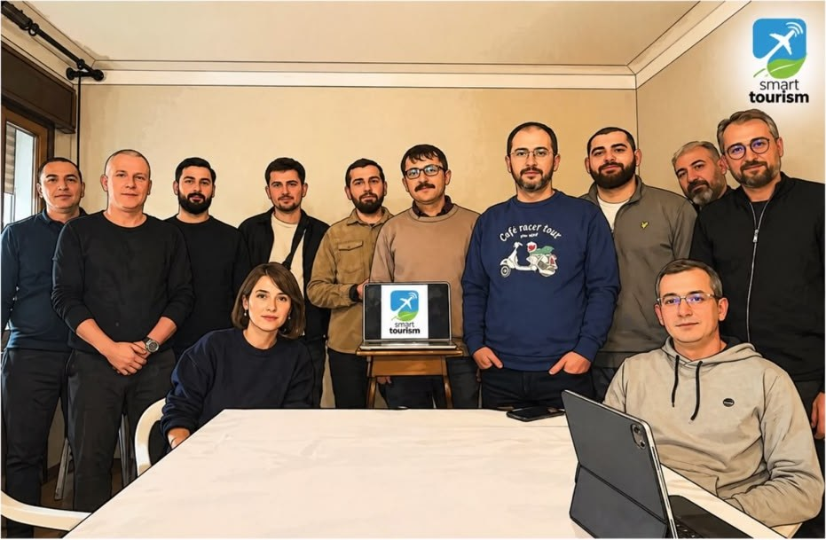

Projet de coopération Erasmus+
Smart & Sustainable Tourism for a Fair Future
Une coopération autour du tourisme durable et intelligent, de la digitalisation, de l’innovation et de l’inclusion.
Türkiye · Espagne · Belgique · Italie
Découvrir le projet